What gets in the way now
Measured on the Chicken Burger, head chef by PIN, test data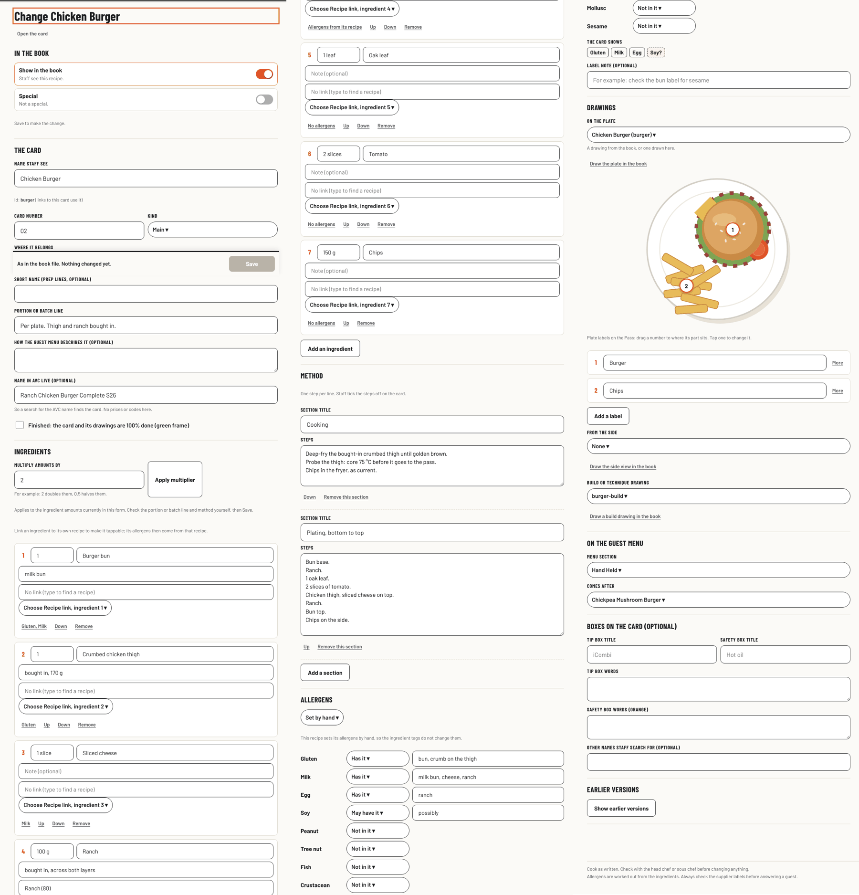
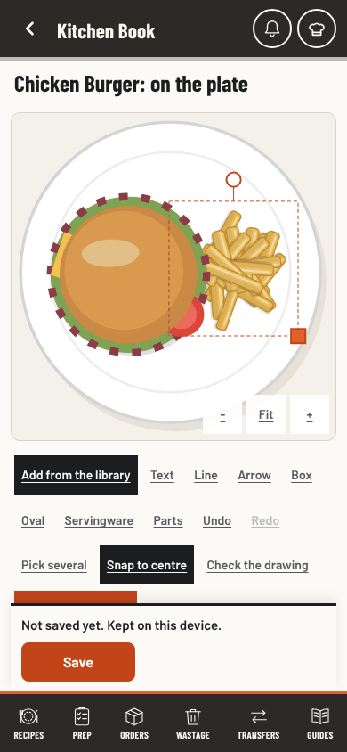
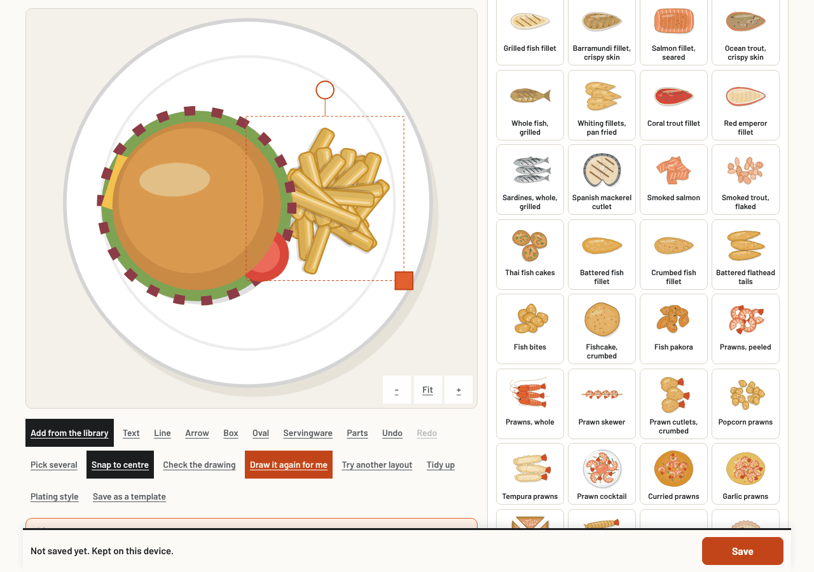
R1The recipe form is one page of 11 sections.
7,628 px tall on a laptop, about 8,200 px on a phone. Ingredients start at 1,394 px, Method at 3,828 px, Drawings at 5,806 px on a phone.
R2Every ingredient row has 4 boxes and 4 buttons.
266 px per ingredient. 52 boxes and 70 buttons for one burger, so nothing stands out.
R3The recipe link has two controls for one choice.
A typed box (No link, type to find a recipe) and a "Choose Recipe link, ingredient N" picker on every row.
R4Rare fields come before common ones.
The Show and Special switches and 10 card fields (AVC name, guest menu words, short name) sit above the first ingredient. The multiplier sits above the ingredient list.
R5Plate labels are edited in two places.
The form's Drawings section edits pins (label, note, link, across %, down %, side, allergens). The drawing editor makes labels from the parts. It is not clear which wins.
R6Drawings are picked by file id.
"Chicken Burger (burger)" and "burger-build" in dropdowns, no pictures.
R7No view of the card while editing.
The form uses 740 px of a 1280 px laptop. The result shows only after Save and Open the card.
D133 drawing actions look the same.
18 tools and up to 15 part buttons, all underlined words. Draw it for me is the 14th tool.
D2On a phone the part's buttons are out of reach.
They start at 768 px of 844, under the 99 px Save bar and the 68 px tab bar. Draw it for me sits under the Save bar too. On a 1280 x 900 laptop the part bar also starts under the Save bar.
D3Ten panels share one slot.
Library, Servingware, Parts, Colours, Label, Change it, Template, Reuse, Library piece and Plating style open from buttons spread over two bars.
D4"Back" means send to the back.
Everywhere else in the book Back goes to the last page. "Done" means stop picking.
D5Delete looks like Duplicate.
It has Undo, so no confirm is needed, but it should look like a delete.
L1The list mixes three kinds of filter in one picker.
Kinds (Dishes, Batch), states (Changed here, New, Hidden, Not saved yet, Book file changed, Cards to come) and other lists (Drawings, Templates, Made in the book) share one "All" picker.
X1An empty gap under the search boxes.
About 110 px under Find a recipe and Find a drawing, from a shared style added on 2 Nov. A small fix of its own that needs no design choice.
A. Chapters and a studio
RecommendedThe recipe opens on Ingredients. Six short chapters replace the long form, with a rail on a computer and pills on a phone. A dot marks a chapter with an unsaved change. It is the same pattern as the admin Chef's Desk you chose on 1 November.
- Rows you type in. Amount and name in the row; one arrow opens the note, one recipe link, allergens and moving.
- Pictures, not file names for the plate, side and build drawings.
- Rare fields fold away under More card details. Scale amounts becomes a button.
- Studio: one tool row with Draw it for me first. Picking a part swaps in its own row next to the canvas: Swap, Colour, Label, Arrange, More, a red Delete, Done. One panel with tabs: Library, Servingware, Labels, Check.
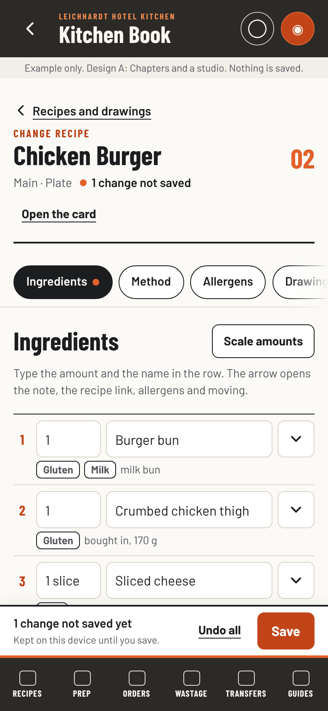
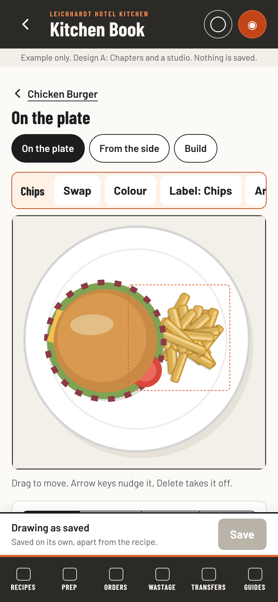
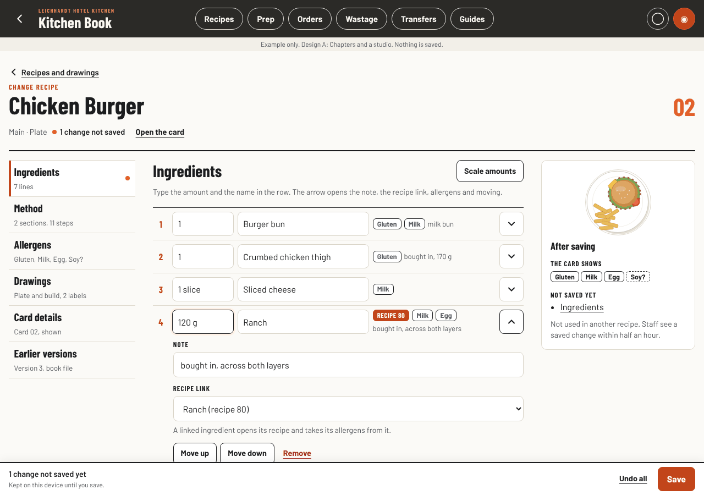
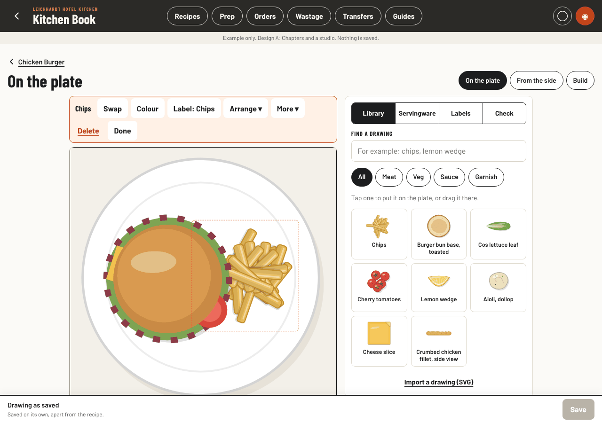
B. Edit on the card
The most direct, the bigger buildThe editor is the card staff see. In Edit every block has a pencil: the title, the plate, the allergens, each ingredient line, each method section and the boxes. Tap one and its fields open in a sheet; the card changes as you type. Preview hides the pencils.
- What you see is what staff get. No Save then Open the card to check.
- Previous and Next ingredient in the sheet, to check a whole list in one pass.
- Behind the card holds Show, Special, the guest menu place, AVC name and earlier versions.
- Full-screen studio: canvas first, one dock at the thumb (Draw it for me, Add, Plate, Labels, Check, More), a small bar beside the picked part.
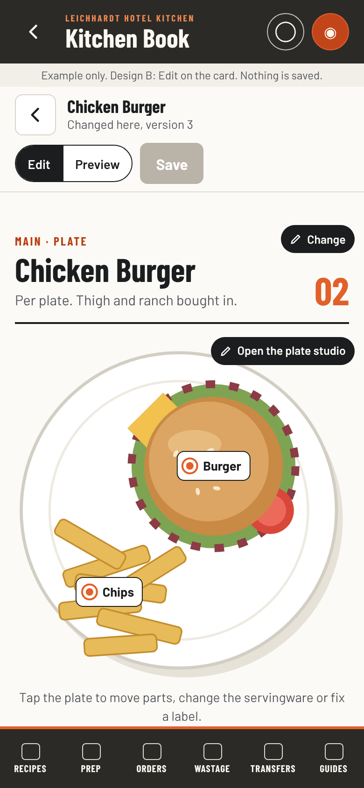
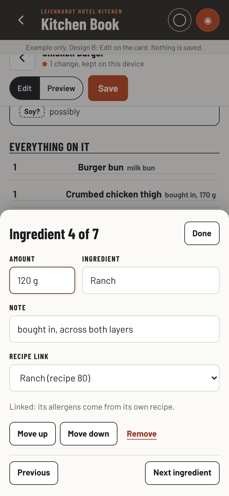
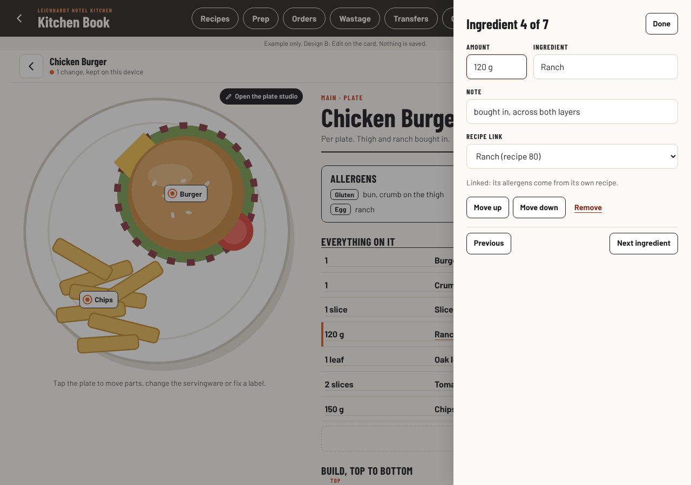
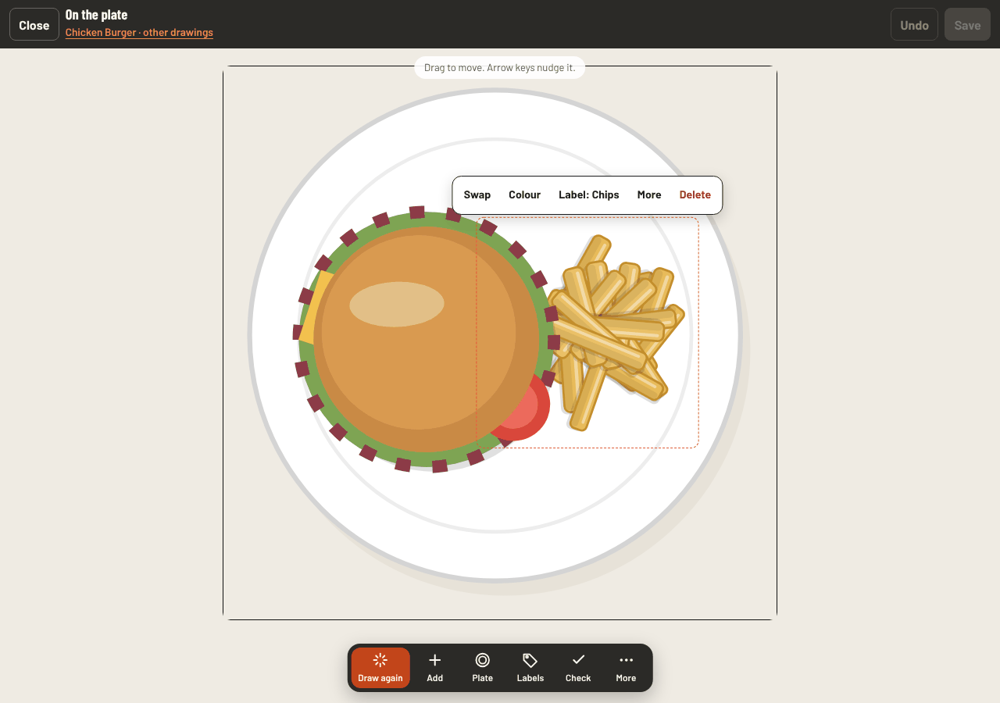
Try them
Example only. Nothing is saved or sent.Side by side
| Now | A. Chapters | B. On the card | |
|---|---|---|---|
| Change one amount on a phone | Change this recipe, scroll about 1,400 px, type, Save | Change this recipe, type in the row, Save | Change this recipe, tap the line, type, Done, Save |
| Delete a part on a phone | Tap it, scroll past the Save bar, Delete, scroll back | Tap it, Delete (row above the canvas) | Tap it, Delete (bar beside the part) |
| Draw it for me on a phone | Scroll; the button is under the Save bar | First button above the canvas | First button in the dock |
| See the result while editing | No: Save, then Open the card | Allergens and unsaved chapters, on a laptop | Yes, the card itself |
| Buttons with a part picked | 33 | 7, the rest in two menus | 5 beside the part, 6 in the dock |
| Fits what you already chose | Follows the admin Chef's Desk | Follows the recipe card | |
| Build | About 6 small, separate changes | About 6 changes, two of them large | |
| Main risk | Moving label editing for drawings made in the book | Sharing the staff card's code with the editor; a full-screen studio has to work with Back and saved drafts; most tests change |
Recommendation: A
A fixes every finding, matches the admin layout you already picked, and ships in small steps that each roll back on their own. It keeps the field names the drafts and tests rely on, so the risk to staff pages stays low.
B is the more striking idea and the most direct on a phone. It needs the staff card's code shared with the editor and a full-screen studio that has to behave with Back, sheets and saved drafts. That is more risk to pages staff use every shift.
The studios are independent of the recipe layouts. A's chapters with B's full-screen studio is a fair mix if B's studio feels better in the hand.
Every capability stays: where each one goes
| Capability | A | B |
|---|---|---|
| Show in the book, Special, Finished | Card details | Behind the card |
| Name, id, card number, kind, where it belongs, portion line | Card details | Title sheet |
| Short name, guest menu words and place, AVC name, other names, tip and safety boxes, label note | More card details, Allergens | Behind the card, box sheets, allergen sheet |
| Ingredients: amount, name, note, link, allergens, order, add, remove, multiply | Rows and row details, Scale amounts | Ingredient sheet, Add an ingredient, Scale amounts |
| Method sections | Method | Section sheet |
| Allergens worked out or by hand, what the card shows, used in | Allergens, laptop column | Allergen sheet, the card |
| Plate, side and build drawings, labels and pins | Drawings, studio Labels | Plate block, studio Labels |
| Earlier versions, the book file's copy | Earlier versions | Behind the card |
| Kept drafts, changed on another device, book file changed, errors | Banners on the chapter | Banners above the card |
| Library, import SVG, text, line, arrow, box, oval | Library tab, Shapes | Add, More |
| Servingware and its options | Servingware tab | Plate |
| Draw it for me, another layout, tidy up, plating style, unsure picks | Tool row, More | Dock, More |
| Pick several, snap to centre, parts list, undo, redo, zoom | More, tool row | More, top bar |
| Part: swap, colours, label, order, duplicate, flip, stretch, split, library piece, change it, delete | Part row, Arrange, More | Part bar, More |
| Template, use for another recipe, start from a copy, newer library drawings | More, start panel | More, start panel |
What happens next
Chosen: A's chapters with B's full-screen studio. Each step is its own small change, tested at phone, tablet and laptop size. None of them changes who can save, what is read from the book or what is stored.
- The search box gap (any choice).
- A: rows you type in, one link control. B: the card drawn from the draft.
- A: chapters. B: Edit, Preview and the block sheets.
- Drawings with pictures and one home for labels.
- The studio's tool row, part row and red Delete.
- Studio panels, and the recipe list's filters.